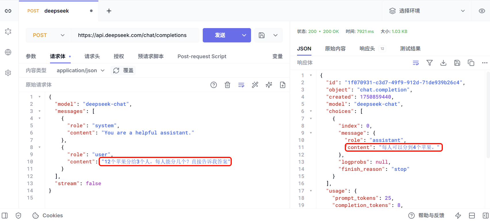
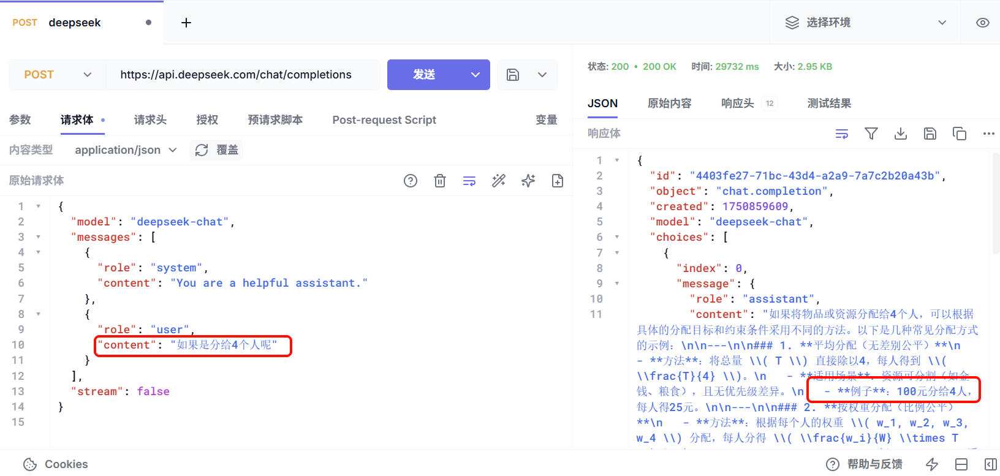
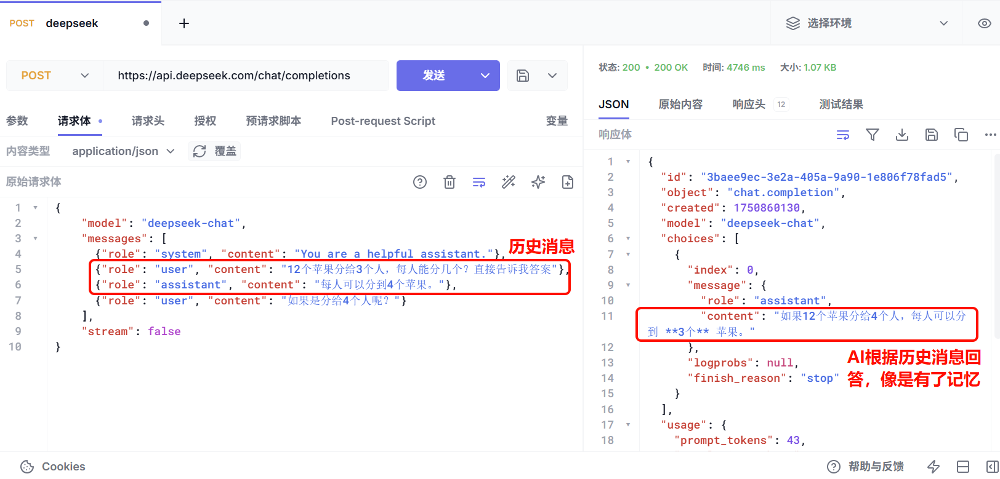

会话记忆问题
正在读取本章记录下次复习：—
暂时无法连接学习服务，恢复连接后才能记录学习进度。
这里还有一个问题：
我们为什么要把历史消息都放入Messages中，形成一个数组呢？
大模型的API接口是"无状态"的，服务端不会记录用户请求的上下文。因此我们调用API接口与大模型对话时，每一次对话信息都不会保留，多次对话之间都是独立的，没有关联的。
因此大模型并不知道之前的聊天历史，也就是说大模型是没有记忆的。
测试，我询问AI一个问题：12个苹果分给3个人，每人能分几个？

AI的答案是：每人可以分到4个苹果。
我们接着问：如果是分给4个人呢？，由于AI没有记忆，它不知道我是接着上一题问的，因此不知道要分的是12个苹果，答案就有问题：

可以看到，AI完全不知道我们聊天的背景是上一次的分12个苹果。
那么，如何才能让AI具备记忆呢？
要实现多轮对话，应用通常需要在每次请求中提供仍然相关的历史或摘要；不应无条件拼接“所有历史”，还要受上下文窗口、隐私、成本和延迟限制。生产系统通常会做截断、摘要、检索或按会话存储。
官方文档说明：
https://api-docs.deepseek.com/zh-cn/guides/multi_round_chat
要想让AI具备记忆，就必须把对话历史都添加到请求体中的messages数组中，像这样：
{
"model": "deepseek-chat",
"messages": [
{"role": "system", "content": "You are a helpful assistant."},
{"role": "user", "content": "12个苹果分给3个人，每人能分几个？直接告诉我答案"},
{"role": "assistant", "content": "每人可以分到4个苹果。"},
{"role": "user", "content": "如果是分给4个人呢？"}
],
"stream": false
}
测试结果：

好了，现在我们能用图形界面的Http客户端发送http请求，调用大模型了。
但是这样还不够，如果要开发AI应用，肯定是要通过编程的方式发送Http请求，调用大模型。